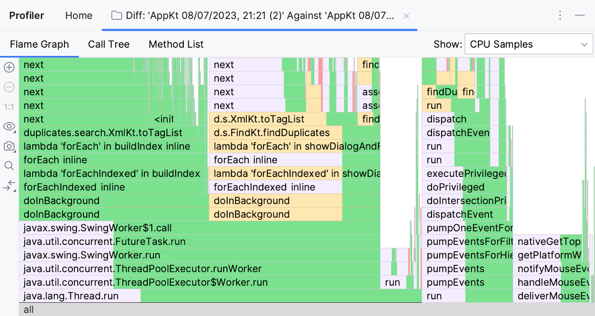

Gráfico de llama diferencial
Al comparar dos instantáneas del generador de perfiles, puede comparar el rendimiento de algoritmos, enfoques e incluso JDK. en el lado derecho de la barra de herramientasComparar con la línea de base Haga clic y luego seleccione otra instantánea. Puede ver los resultados de la comparación en varias vistas y ver exactamente dónde ocurren las diferencias.
